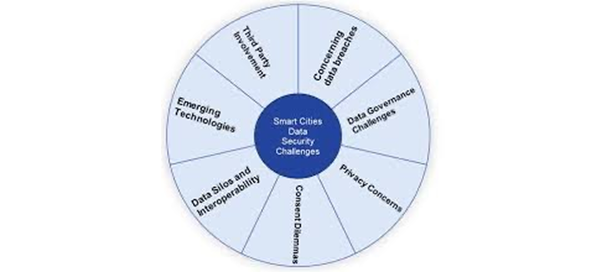

Background
A Smart City is an urban area that utilizes technology, data, and innovative solutions to enhance the quality of life for its residents, improve efficiency, and promote sustainability. It involves using data and technology to optimize city functions, improve services, and engage citizens more effectively.
Core Concepts


Locative Media: Location-based technologies to connect digital information with physical spaces. By overlaying digital content onto urban environment, locative media can enhance urban experience, facilitate community engagemnet and provide location-specific services.


IoT: IoT smart cities utilize Internet of Things technology to connect various devices and system within a city to improve efficiency, sustainability, and the quality of life for residents.


Surveillance Capitalism: The use of digital technologies to collect and analyse vast amounts of personal data, often without explicit consent, for profit and control. This practice also raises significant concerns about privacy, autonomy, and the potential for manipulation and social control.
